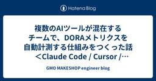
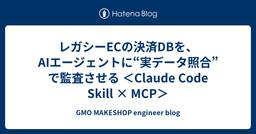
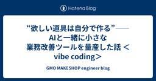
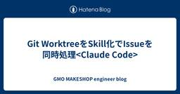

GMO MAKESHOP engineer blog
https://tech.makeshop.co.jp/
GMOメイクショップは、次世代EC構想を時代の流れにあった技術で構築していきます。プロダクト開発で得た学びや課題に対する取り組みなど、開発者が実際経験した様々な情報を発信していきます。
フィード

複数のAIツールが混在するチームで、DORAメトリクスを自動計測する仕組みをつくった話 ＜Claude Code / Cursor / Copilot / Codex＞
GMO MAKESHOP engineer blog
こんにちは、makeshop事業本部開発部の鈴木(佳)です。 私のチームでは、Claude Code・Cursor・GitHub Copilot・OpenAI Codex といった複数のAIコーディングツールを、メンバーやタスクによって使い分けています。生産性は確実に上がった実感があるのですが、数値として可視化されていないことが課題でした。 リードタイムも実作業時間も、感覚では分かっても数字で出せない。かといって、開発者に毎回「着手した」「中断した」を手で記録してもらうのは——正直に言うと、続きません。私自身が続けられる自信がありませんでした。 本記事では、この「手で記録しないと続かない」とい…
7日前

レガシーECの決済DBを、AIエージェントに“実データ照合”で監査させる ＜Claude Code Skill × MCP＞
GMO MAKESHOP engineer blog
こんにちは、makeshop事業本部開発部の鈴木(佳)です。 長く運用されたECシステムをリニューアルするとき、いちばん神経を使うのが「決済」です。私たちのチームでは旧システムから新システムへ決済処理を移行しているのですが、ここで厄介なのが、決済方式ごとに、データベースへの書き込み内容が微妙に違うことでした。 「クレジットカードは旧も新も同じ。でも後払い系は新システムだと余分なレコードが1行入る」「定期購入だとサイクル設定のカラムが片方だけ欠ける」——こういった差分が、決済方式 × 注文種別（通常／複数配送／定期購入／予約…）の組み合わせの数だけ存在します。これを人手で突き合わせるのは、現実的…
7日前

“欲しい道具は自分で作る”——AIと一緒に小さな業務改善ツールを量産した話 ＜vibe coding＞
GMO MAKESHOP engineer blog
こんにちは、makeshop事業本部開発部の鈴木(佳)です。 開発をしていると、「これ、地味に面倒だな」という小さな不便に毎日ぶつかります。GitHubのPRをSlackに貼るとき、URLとタイトルを別々にコピーして整える。自分が今週どのPRに関わっていたか、GitHubを何往復もして思い出す。——どれも一つひとつは数十秒の話ですが、塵も積もればそれなりの時間です。 以前なら「ツールを作るほどではないか」と見送っていたこの手の不便を、最近はAIと一緒にその場でサクッと作って解消するようになりました。本記事では、私が実際に作った3つの小さな業務改善ツールと、その「作り方」を紹介します。 なぜ作っ…
7日前

Git WorktreeをSkill化でIssueを同時処理<Claude Code> 1
1
GMO MAKESHOP engineer blog
こんにちは、makeshop事業本部開発部の森です。 AI エージェントに実装を任せる場面が増えるほど、1つのタスクを待っている間に別のタスクも前に進めたくなってきます。空いた時間にもう1つ Claude を走らせている、という方も多いのではないでしょうか。Claude Code を複数セッション並べて動かすのは、もはや特別な運用ではなくなりました。 私自身、手元では cmux で複数の Claude Code セッションを並べて回しています。その並列実行を支える土台が git の worktree です。Claude Code はこの worktree を ネイティブサポート するようになり…
7日前

Symphony × GitHub Issues で PR を自動生成できるようにしてみた
GMO MAKESHOP engineer blog
こんにちは、makeshop事業本部開発部の佐藤です。 OpenAI が公開したエージェントオーケストレーター Symphony を、GitHub Issues から動かすためのアダプタを作ってみました。2026 年 5 月時点で Symphony は公式には Linear 専用 で、リポジトリ内に GitHub 連携用のコードが一部存在するものの、そのままでは動かない状態でした。実際に運用に乗せるまでに、いくつかの修正と設定の工夫が必要だったのでその記録としてまとめておきます。 Symphony とは なぜやろうと思ったか Symphony の GitHub 対応はどこまで来ているか Tra…
21日前
gitleaks × pre-commit で機密情報のうっかりコミットを防ぐ
GMO MAKESHOP engineer blog
gitleaks と pre-commit を組み合わせて、ローカルと CI のダブルチェックで機密情報のコミットを未然に防ぐ仕組みを導入しました。設定ファイル、GitHub Actions の構成、動作確認の例まで一通り紹介します。
2ヶ月前
Google アラート × GAS × LLM × Slack で 判断が一瞬で終わるニュース収集を実装する（Part2：実装編）
GMO MAKESHOP engineer blog
本記事（Part2）は、Googleアラートで集まるニュースを、GAS・LLM・Slackを用いて「人が読む前に判断が完結する状態」まで実装で落とし込んだ具体例を解説しています。内容は、ニュース取得からAI分析、Slack通知、オンデマンド深掘り、日次サマリ生成までを「3つのデータパイプライン」に分解し、それぞれでどこで判断が終わっているかを明確に示しています。GPT-4oは単一記事の要点抽出・重要度判定・3行広告生成を担当し、Geminiは複数記事を横断したトレンド分析を担当。判断に不要な処理や常時分析を避けることで、コストと運用負荷を最小化しています。結果として、情報収集を「記事を読む作業」から「Slackを見るだけで意思決定できる作業」へ変換する、実運用前提の判断構造を実装レベルで示した記事です。
6ヶ月前
Google アラート × GAS × LLM × Slack で 判断が一瞬で終わるニュース収集を実装する（Part1：設計編）
GMO MAKESHOP engineer blog
本記事（Part1）は、Googleアラートで集まる大量ニュースを「読む対象」ではなく、判断が一瞬で終わった状態の情報に変換するための設計思想を解説しています。情報収集の本質的なボトルネックは、記事内容ではなく「読むべきかを判断するコスト」にあると定義し、その判断工程をシステム側に移譲することを目的としています。GAS・LLM・Slackを組み合わせ、LLMの役割分担や三行広告といった表現設計により、人が迷わず意思決定できる構造を設計レベルで整理。Part2の実装解説に先立ち、どこで・なぜ判断が完結するのかを明確にした設計編です。
6ヶ月前
AWS Batch × サイドカーパターン：マルチコンテナジョブで既存資産を有効活用し責務を分離する
GMO MAKESHOP engineer blog
AWS Batchのマルチコンテナジョブを活用し、Go言語のメインロジックからcgo依存の画像処理を分離した「サイドカーパターン」の構築事例を解説します。既存コンテナの再利用やFireLensによるログ転送、Go SDKでの動的なジョブ実行など、実務に即した具体的な実装ポイントを詳しく紹介します
6ヶ月前
TaskfileをAIに理解させる - MCP Server化による開発効率化
GMO MAKESHOP engineer blog
次世代EC開発プロジェクトでTaskfileを使う際、AIに複数のTaskfileを指定する手間や実行エラーなどの課題がありました。これらを解決するため、TaskfileをMCP Server化し、AIがタスクを自動認識できるようにしました。その実装方法と効果を紹介します。
8ヶ月前
GASとPerplexity、ChatGPT連携！自動クイズ生成で「知る→できる」を加速する
GMO MAKESHOP engineer blog
最新の業界情報を効率よく学び、チームの知識定着を促進することを目的にした自動化システムです。
10ヶ月前
PHPDocを「書く習慣」がチームを強くする理由
GMO MAKESHOP engineer blog
本記事は、PHP開発におけるPHPDocの重要性と、その習慣化によるメリットを実体験に基づいて解説しています。型情報やコメントを丁寧に書くことでバグの減少や意図の共有、単一責任の意識向上につながることを紹介。チームで無理なく継続するための現実的な運用方法にも踏み込み、理想論ではない実践的なアプローチを提案しています。
10ヶ月前
バイブコーディングで作ったWebアプリがあればデザイナーは不要になるのではないか説
GMO MAKESHOP engineer blog
非エンジニア・非デザイナーの立場から、AIを活用したバイブコーディングでバナー制作アプリ「Vibe Draw」を開発。デザイナーが設計したテンプレートに自然言語で指示するだけで統一感のあるクリエイティブを生成できる仕組みを構築し、従来2週間かかっていたコンテンツ制作を10時間程度に短縮することに成功した実験レポート。
1年前
geolonia/normalize-japanese-addressesで揺らぎのある住所を簡単に比較する
GMO MAKESHOP engineer blog
こんにちは、プロダクト開発部コアグループの井上です。 新決済画面のSmart Checkoutでは住所比較APIを作成して、数ヶ月前から注文者住所と受取先住所の揺らぎを吸収しています。 今回は作成に至った背景やAPIについて紹介します。 背景 makeshopの仕様 makeshop管理画面では注文者と受取人が異なる場合に以下のような仕様があります。 管理画面上で「注文者と異なる送付先」のアラート表示をしている 一部出荷伝票用のCSV出力時に送り主がショップ情報から注文者情報に変わる 課題 住所表記の揺らぎによる誤判定 実際には同じ住所なのに表記揺れで「異なる住所」と判定され、て困っているとい…
1年前
SAMを使った開発中に起きた不思議な挙動をClaude Codeに調べてもらった
GMO MAKESHOP engineer blog
こんにちは、プロダクト開発部コアグループの井上です。 現在ECSでgithub.com/RichardKnop/machineryを使って実行している定時処理をEventBridge + Lambda/ECSをSAMを使って管理する形に置き換えています。 LambdaがあらかたできたのでECSを追加しようとしていたところ不思議な挙動にハマってしまいました*1 構成 環境別のsamconfigにparameters_overrideを設定してsam deploy時に--config-fileで読み込む構成です。 sam ├─ samconfig-dev.yaml ├─ samconfig-stg…
1年前
claude codeを約1ヶ月使ってみて
GMO MAKESHOP engineer blog
こんにちは、プロダクト開発部コアグループの井上です。 6月からClaude Maxプランでclaude codeを使い出して1ヶ月弱経過したので感想などを書いていこうと思います。 筆者のAI利用遍歴 GitHubCopilot 主にCopilotChatでゼロベースの実装に使っていました。自動補完はノイズだなくらいの感想 GoogleWorkspaceにバンドルされた Gemini 2.5Pro, DeepResearchはかなり愛用していました。 実際に使ってみたユースケース 普段の開発ではGeminiを使っていましたが、Claude Codeを使い始めてからは完全に置き換わりました。 実際…
1年前
次世代ターミナル「Warp」の魅力と特徴
GMO MAKESHOP engineer blog
こんにちは。makeshopエンジニアの森です。今回はAI搭載の次世代ターミナル Warp を紹介します。 私自身iTerm2から乗り換えてみてその魅力を実感しているので、実際の使用体験を交えなが解説していきます。 1. Warpとは？ 2. 主な特徴 ブロックベースのUI設計 高機能な入力エディター AIアシスタント機能 3. プランと料金 4. まとめ 1. Warpとは？ Warpは、Rustで開発されたGPUレンダリング対応のモダンなターミナルアプリケーションです。 従来のテキストベースなCLIとは一線を画すUI/UXと、AIによる支援機能が特徴です。 技術的特徴： 開発言語: Rus…
1年前
プロジェクト開発におけるContainer/Presentationalパターンの効果
GMO MAKESHOP engineer blog
こんにちは。GMOメイクショップの森です。 弊社のシステム makeshopでは日々アーキテクチャ改善を進めています。本記事では、その一環として導入を進めている Container/Presentationalパターン について、実装例を交えながらそのメリット・デメリットや Vue 3 における実践的なポイントを解説します。 過去にもmakeshopのContainer/Presentationalパターン導入について解説した記事がありますので、こちらもあわせてご覧ください。 tech.makeshop.co.jp Container/Presentationalパターンとは？ Contain…
1年前
WebP 対応までの道のりと、直面したハードルたち
GMO MAKESHOP engineer blog
makeshopでは、WebP形式の画像アップロードに対応しました。特にanimated WebPの対応には課題が多く、Goライブラリの選定や圧縮処理の最適化に試行錯誤を重ねました。最終的に品質と性能を考慮し、animated WebPは1MB以下のアップロード制限を設けることで対応しました。
1年前
Vueでも! デザインシステムをMCPサーバー化してみた
GMO MAKESHOP engineer blog
話題のMCP(Model Context Protocol)を活用し、Vue3/Vuetifyベースのデザインシステム向けに独自サーバーを実装。LLM連携による開発効率化、実装ノウハウ、課題を詳解します。
1年前
Slack→Amazon API Gatewayの連携解説
GMO MAKESHOP engineer blog
GMOメイクショップ コアグループ エンジニアの森です。 先日、業務効率化を目的としたAI活用ツールを開発しました。 このツールでは Slack, AWS, GAS 等複数の連携を実装しましたが、この記事ではSlackからAmazon API Gatewayへのリクエスト送信部分について解説していきます。 作成したツールの全体像についてはこちらの記事で解説しています。ご興味があればご覧ください。 tech.makeshop.co.jp 1.Slack Workflow 2.Slack Outgoing Webhooks 3.Amazon API Gateway モデル リソース メソッドリクエ…
1年前
依存ライブラリのライセンスをホワイトリスト方式で自動チェック
GMO MAKESHOP engineer blog
OSSライセンスをホワイトリスト方式で自動チェックする方法を考え、導入した時のことを記録として書いてます。
1年前
リソースを作成するAPIをつくるときに気をつけたいこと
GMO MAKESHOP engineer blog
こんにちは、プロダクト開発部コアグループの井上です。 コアグループでは、次世代ECの開発を行っています。 最近、新規リリースされるAPIと連携するタスクを行なっていたので、今回は外部に公開するAPIを作る際にはこういうポイントに気をつけたいなと思ったポイントをリソースを作成するAPIに焦点を当てて考えてみました。 1. 冪等性かつ同じレスポンスを返す 冪等でない場合 2回目以降レスポンスの一部、または全部を受け取れない場合 2. エラー時にリトライ可能かを示す 3. 入力値チェックの仕様はドキュメントもしくはエラーコードで明示する まとめ 1. 冪等性かつ同じレスポンスを返す 例えば以下のよう…
1年前
半年間 毎週チーム内勉強会に参加してみて
GMO MAKESHOP engineer blog
約半年間続けているチーム内勉強会の概要やメリットを紹介。設計戦略やAIツールの検証、トレンド技術の要約共有など多彩なテーマを短時間LT形式で共有し、効率化の工夫や運営のポイントも振り返っています。
1年前
2024年の振り返りと2025年に向けたシステム開発の改善点
GMO MAKESHOP engineer blog
GMOメイクショップの2024年の開発経験を振り返り、2025年に活かすための改善点や取り組みを共有。ドキュメントの読み合わせ、デイリーコミュニケーション、意思決定の記録、情報の集約など、効率的なプロジェクト管理のポイントを解説します。
2年前
アーキテクチャから刷新！柔軟なデザイン変更を可能にした新注文詳細
GMO MAKESHOP engineer blog
新管理画面の注文詳細をリニューアル!将来的なデザイン変更や柔軟な機能改善に対応するため、アーキテクチャをゼロから見直し、Container/PresentationalパターンやRepositoryパターンを採用しました。
2年前
TypeSpecを使ったOpenAPIドキュメント生成
GMO MAKESHOP engineer blog
TypeSpecを活用して、OpenAPIドキュメントを効率的に作成し、フロントエンドで型安全なREST API通信を実現する方法を解説します。
2年前
Plopでジェネレーターを作ってStoryファイルを自動生成してみたら簡単だった
GMO MAKESHOP engineer blog
ジェネレーターを作成するJavascriptライブラリであるPlopの使い方を解説しつつ、PlopでStoryファイルの自動生成を行った経験を書いてます。
2年前